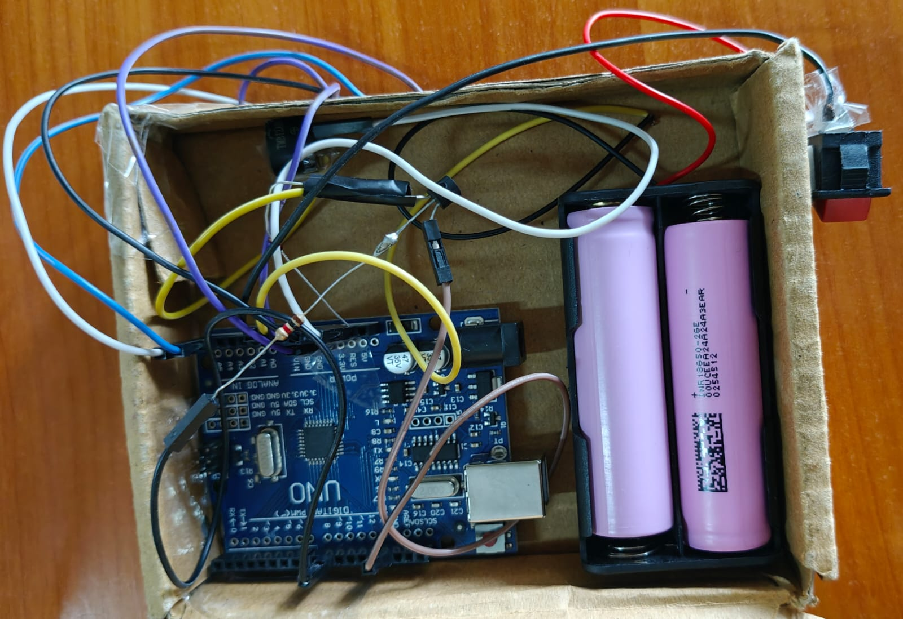

Arya Acharya
Christ University, Bangalore
About Me
My name is Arya Acharya. I am based in Bangalore, India.
I'm a B.Tech. graduate from Christ University, Bangalore (CGPA: 8.76), currently interning as a UX Designer at Walmart Global Tech India, with a strong interest in emerging technologies.
Proficiencies
Game Development
Game Design
Software Design Patterns
Product Design
Database Management
Microcontroller Programming
Generative AI
Agentic AI
AI Task Automation
AI-Based Workflow
UX Design
UX Research
Interaction Design
Wireframing
Level Design
Particle Effects
Shader Graphs
Data Structures
SQL
Software Testing
Tools
Figma
Unity
Blender
Arduino IDE
Autodesk Tinkercad
.NET Framework
Selenium
Git
Developer Platforms
GitHub
Jenkins
Docker
CI/CD Pipelines
DevOps Automation
Programming Languages
C#
Java
JavaScript
C
React
HTML5
CSS
SQL
Soft Skills
Problem Solving
Documentation
Collaboration
Attention to Detail
Work Experience
UX Designer Intern
Walmart Global Tech India • March 2026 – Present
- Designed interactive prototypes for an analytics dashboard for site merchants, enabling data driven decisions to improve sales, customer experience, and product visibility, extensively leveraging LLMs
- Designed an AI powered Item Intelligence dashboard, providing merchants with a comprehensive 360-degree view of every product across the catalog
- Interpreted Figma designs to responsive web pages using React, Tailwind CSS, and AI-assisted Figma-to-code MCP workflows
- Conducted heuristic evaluations and UX research to identify usability issues and recommend design improvements that enhanced the overall user experience
- Led the planning and execution of neurodiversity and accessibility awareness events for Walmart
Game Development Intern
Red Panda Games Studio • Nov 2024 – June 2025
- Manipulated shader graphs and particle effects to enhance visual elements
- Refined the game’s UI to ensure a clean, intuitive, and user-friendly interface layout
- Led GDD-based case studies to extract and document adaptable game mechanics
- QA and Regression testing to report bugs and enhance user experience
- Balanced troop and building interactions by tuning HP, counters, and damage values
AR Research Intern
Stipe Solutions Pvt. Ltd. • April 2025 – June 2025
- Researched AR integration for a real-time video-based web system.
- Integrated photos, videos, and AR overlays with captions using Microsoft Clipchamp.
Software Engineer Intern
Hitachi India Pvt. Ltd. • April 2024 – June 2024
- Visual stack & queue data structure implementation in Unity
- Visual Weather App using Api in Unity
- Integrated and tested Blender models
Project Showcase

Bioshock III - Posture Monitoring
Real-time posture monitoring using IMU + live dashboard.
View on GitHub